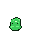
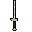
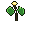
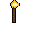
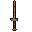

☰
G
R
I
D
-
A
-
I
R
O
N
DUNGEON
HP
20
/
20
MAP
?
WASD
HOW TO PLAY
Swipe gestures
↑
swipe up — move forward
↓
swipe down — move backward
⇒
swipe right — turn right
⇐
swipe left — turn left
Tap on the 3D view
tap here to attack

tap here to equip

tap here to take

Close
SETTINGS
(Close to dismiss)
Music
SFX
🔊 Mute
Close
^
<
>
v
I


Lv 1
HP 20/20
N
E
S
W
—
^
Inventory (I)
Vendor (V)
one more skeleton for my army...
Play Again (Space)
g
r
i
d
-
A
-
I
r
o
n
DUNGEON
Enter
🔊 Mute
VENDOR
(V or Close to dismiss)
Close
INVENTORY
(I or Close to dismiss)
Close
↺
↑
↻
Open Door (E)
↓
▼
Slumber and dream again…